В категорию офисных продуктов Microsoft входят фактически все клиентские приложения, предназначенные для пользователей (не средства разработки). Число их довольно быстро растет - в 1994 г. полный вариант Office 4.3 включал пять приложений, а Office 2000 Premium спустя пять лет - уже девять.
Однако кроме пакетов, входящих в состав комплекта Microsoft Office, у компании имеется несколько офисных продуктов, которые поставляются только автономно, -- это Microsoft MapPoint и Microsoft Project. Индивидуальное позиционирование последних объясняется их ориентацией на специфический круг пользователей: MapPoint 2000 интересен только жителям США (сила пакета - в наличии соответствующих географических карт), а Project предназначен для поддержки управления крупными проектами.
В ушедшем году среди офисных продуктов Microsoft появился еще один автономный пакет - Visio 2000. Однако, скорее всего, это приложение войдет в состав будущего комплекта Microsoft Office, так как оно предназначено для достаточно широкого круга пользователей. Можно довольно уверенно предположить, что у Microsoft Visio очень хорошие перспективы - продукт пользовался успехом в течение своей десятилетней истории. Интеграция с технологиями Microsoft и усиление маркетинговой поддержки наверняка усилят его рыночные позиции.
Microsoft Visio 2000 распространяется в виде четырех изданий (см. таблицу), каждое из которых ориентировано на конкретную категорию пользователей: Standard - на менеджеров разного уровня в различных предметных областях, Technical - на инженеров и конструкторов, Professional и Enterprise - на ИТ-специалистов (администраторов и проектировщиков сетей, разработчиков информационных систем и ПО, руководителей ИТ-проектов).
Характеристики различных изданий Microsoft Visio 2000 |
||
|---|---|---|
| Издание Цена (долл.)*, полная/обновление |
Область применения | Что можно создавать |
| Standard 199/99 |
Общее руководство организацией Административная работа и управление кадрами Управление проектами в самых различных сферах деятельности Маркетинг, сбыт, работа с клиентами |
Блок-схемы, в том числе структура организации и планы помещений Диаграммы документооборота Временные диаграммы проекта Планы маркетинга и сбыта продукции Диаграммы отношений Ассоциативные диаграммы Географические карты и схемы |
| Technical (включает Standard) 399/299 |
Проектирование оборудования Архитектура и строительство Автоматизация производства Проектирование непрерывных технологических процессов |
Двумерные чертежи и эскизы Пространственные планы Сметы инженерных коммуникаций и расположения оборудования Схемы непрерывных технологических процессов Принципиальные электрические схемы Сборочные чертежи Гидравлические схемы |
| Professional (включает Standard) 399/299 |
Администрирование компьютерных сетей Анализ и разработка баз данных Разработка локальных и глобальных сетей Разработка ПО Проектирование систем обработки деловой информации |
Сетевые диаграммы физического и логического уровня Карты Web-узлов Блок-схемы обработки деловой информации Схемы представления отношений между объектами Графики потоков данных Блок-схемы программ Эскизы интерфейса пользователя |
| Enterprise (включает Professional) 999/699 |
Разработка сети и документации для нее в масштабе предприятия Построение диаграмм и моделирование баз данных Построение диаграмм и моделирование ПО |
Сетевые диаграммы физического и логического уровня масштаба
предприятия Модели баз данных и ПО Автоматическое построение схем и диаграмм на основе описаний сетей, проектов, баз данных Автоматическое внесение изменений в описания сетей, проектов, баз данных (в том числе генерация исходного кода) |
| *Ориентировочная розничная цена коробочного продукта из американского онлайнового каталога. У российских дилеров цены на 5-10% выше. Для всех изданий Visio 2000 имеются академические версии, стоимость которых в 3-4 раза ниже обычных. Visio распространяется также по каналам продаж открытых корпоративных лицензий. В состав продукта входит печатное руководство, а также полный комплект документации в виде PDF-файлов (руководства ко всем изданиям, описания Developing Visio Solutions и OMG Unifuted Modeling Language Specification). Кроме документации, пакет включает программу интерактивного обучения пользователей -- Discover Visio 2000 Interactive Traning. |
||
На фоне огромного числа графических пакетов определение "Microsoft Visio - средство визуального представления деловой информации" довольно слабо отражает реальные возможности продукта. Например, в отличие от Excel, который автоматически формирует диаграммы и графики на основе численных табличных данных или математических зависимостей, Visio предназначен в первую очередь для изображения разнообразных систем - наборов разнородных объектов с указанием взаимосвязей между ними. При этом пользователь может применять как ручные, так и автоматические методы рисования по некоторым исходным данным (например, табличному описанию штата сотрудников организации). Но в любом случае он получает изображения в некотором заданном стиле или стандарте. Однако функции Visio выходят далеко за пределы лишь визуализации данных. Его наиболее полный вариант Enterprise включает средства моделирования и визуального проектирования при решении целого ряда распространенных ИТ-задач.
Технические требования продукта: процессор Pentium/200, объем памяти 48-64 Мбайт, 80 -- 130 Мбайт на жестком диске, привод CD-ROM, Windows 9x/NT/2000.
Необходимо еще сказать, что, как и другие офисные приложения Microsoft Office, пакет Visio 2000 реализован в виде иерархического набора объектов ActiveX и включает среду Visual Basic for Applications. Более того, Visio выгодным образом выделяется на фоне других программ Office наличием весьма подробной документации и хороших примеров, многие из которых записаны в подкаталоге DVS (Developer Visio Solutions). Кроме того, на сайте http://msdn.microsoft.com/officedev/downloads/ имеется библиотека повторно используемого программного кода (для утилиты Code Librarian), предназначенная для разработчиков в среде Visio/ Visual Basic for Applications.
Учитывая то, что Microsoft Visio пока не очень хорошо известен российским пользователям, мы в этой статье сделаем акцент на то, "что может делать пакет", оставив вопрос "как это делается" на будущее. Следует подчеркнуть, что мы расскажем лишь о некоторых возможностях данного приложения, ориентируясь на функциональность издания Microsoft Visio 2000 Professiaonal.
Немного истории
Корпорация Visio была создана в 1990 г., и она довольно быстро стала известна на рынке благодаря одноименному программному продукту. Успех программы был во многом обеспечен правильным прогнозированием появившегося спроса на средства визуальной поддержки повседневной работы административных и технических сотрудников и четким позиционированием на определенный круг решаемых задач: описание структуры организации и используемых в ней инженерных и вычислительных систем, анализ функционирования систем, эффективное планирование и управление разработками. Все это подкреплялось высоким качеством продукта в сочетании с умеренными ценами и аппаратными требованиями.
В результате продукт Visio завоевал популярность у широкого круга пользователей в государственных, коммерческих и академических организациях. По данным корпорации, в 2000 г. его применяли около четырех млн. пользователей в 60 странах мира.
В то же время продукта подобного класса явно не хватало в семействе Microsoft Office, и Microsoft решила эту проблему, купив осенью 1999 г. корпорацию Visio. Эта сделка оценивалась тогда в сумму примерно 1,3 млрд. долл., что соответствовало общей рыночной стоимости акций Visio (которые приобретались путем обмена одной акции на 0,45 акции Microsoft). Успех приобретения сразу же получил подтверждение на Уолл-стрит: в день объявления сделки цена акций Visio выросла на 20%, акций Microsoft - на 1%.
Microsoft Visio 2000, сменивший предыдущую версию Visio 5.0, - первый продукт, вышедший под совместной торговой маркой Microsoft и Visio. Тут нужно отметить, что в технологическом и организационном плане Visio Corporation стала работать в составе группы Microsoft по приложениям делового назначения. Но при этом она в какой-то степени сохранила автономный юридический статус (примерно так, как Lotus в составе IBM), и в информации об авторских правах в последней версии продукта указано, что их обладателем является Visio Corporation.
Основные элементы технологии
Запустим Visio 2000, откроем один из готовых графических файлов пакета и на его примере ознакомимся с основными элементами технологии формирования изображения (рис. 1).
| 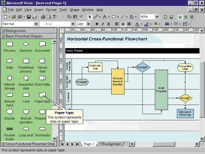 | Рис. 1. Пользовательский интерфейс Visio. Слева окно Stenсils (с тремя вкладками), справа - окно Drawing для рисования схем.
|
Пользовательский интерфейс выполнен в традиционном стиле продуктов Microsoft Office: в верхней части строка меню, под ней панели инструментов (всего имеется 11 встроенных панелей). Настройка интерфейса также выполняется стандартным образом с помощью окна Customize. Visio 2000 не позволяет подключать расширения COM Add-Ins, но такая опция (в данной версии недоступная) в окне параметров имеется.
Основную часть экрана занимают два окна: Stencils (слева, с зеленым фоном) и Drawing. Однако, чтобы разобраться с их применением, сначала нужно ознакомиться с четырьмя типами файлов, которые используются в Visio, и некоторыми другими базовыми понятиями.
Stencil, *.VSS (трафарет) - проблемно-ориентированный набор графических элементов (masters), из которых строятся все графические изображения. В состав издания Professional входят около пятидесяти готовых Stencil-файлов, а кроме того пользователь может создавать собственные наборы.
Для формирования изображений пользователь загружает один или несколько Stencils, которые располагаются в соответствующем окне в виде вкладок. В примере на рис. 1 используются три набора - Backgrounds, Basic Flowchart Shapes (активный) и Cross Functional Flowchart Shapes Horizontal.
Master (master shape) - отдельный элемент изображения. При перетаскивании master из окна Stencils в окно рисования создается его экземпляр, который называется shape (очертание). Master кроме графического изображения имеет целый набор свойств (графическое оформление, текст, иконка, гиперссылки и пр.). Пользователь может редактировать существующие master-компоненты или создавать новые.
Workspace, *.VSW (рабочее пространство) - фиксирует текущий набор загруженных Stencils и физическое расположение этого окна. Команда записи Workspace выполняется горячими клавишами Alt+F12.
Drawing, *.VSD (рисунок) - файл с рисунком (связанный набор графических элементов с соответствующими стилями и свойствами), для создания которого мы и применяем Visio. При сохранении VSD-файла можно (по умолчанию) записать в него информацию Workspace. Если Workspace не сохраняется, то при загрузке файла появится только окно Drawing.
Template, *.VST (шаблон) - фактически это тот же Drawing-файл, но его содержимое используется только для создания нового файла.
Solutions (решения). Под ними в документации понимается набор готовых файлов Stencils и Templates, которые хранятся в подкаталоге SOLUTIONS\. Многие из них представлены парой файлов с одинаковыми именами (например, File.VSS и File.VST), но это не должно вводить вас в заблуждение - один VST-файл порой содержит несколько Stencils, а порой - ни одного. Именно поэтому Solutions часто используется как синоним Templates - в справочной системе есть описание около 50 таких готовых решений (рис. 2), для которых имеются примеры в виде VSD-файлов, записанные в подкаталоге SAMPLES\. Открыть примеры можно командой File|New|Browse Sample Drawings.
| 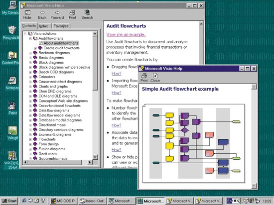 |
| Рис. 2. В справочной системе описано около 50 различных прототипов (Solutions) для создания схем.
|
Для удобства работы все Solutions разбиты на несколько предметно-ориентированных категорий; они представлены в диалоговом окне Choose Drawing Type (рис. 3), которое открывается командой File|New|... при создании нового рисунка.
| 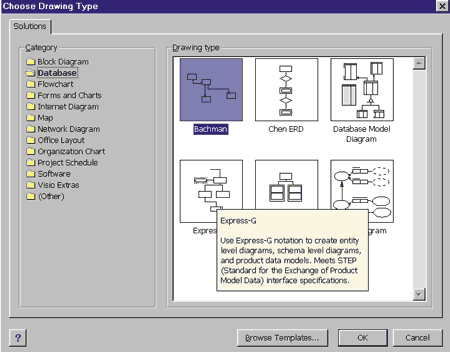 | Рис. 3. Выбор нужного шаблона с помощью окна Choose Drawing Type.
|
Вы можете сделать собственные Solutions - нужно просто подготовить свои трафареты и шаблоны и записать их в один из подкаталогов (или создать собственный) в каталоге SOLUTIONS\.
Еще одно замечание относительно создания рисунка: в общем случае он может быть многослойным, причем каждому слою соответствует вкладка (см. рис. 1). Структуру рисунка со всеми используемыми компонентами и параметрами можно видеть в окне Drawing Explorer, которое открывается командой View|Windows (рис. 4).
| 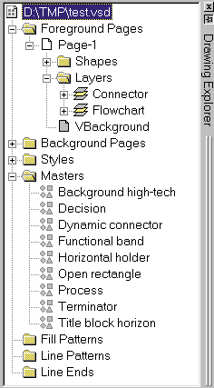 | Рис. 4. Структура создаваемого рисунка видна в окне Drawing Explorer.
|
Создание простых схем
Для построения диаграмм и схем пользователь может применять два основные приема: рисовать "с нуля" и автоматически формировать изображение на основе некоторых данных с помощью широкого набора мастеров.
Например, если вы хотите нарисовать блок-схему алгоритма, вычисляющего факториал (рис. 5), то следует выбрать в наборе готовых шаблонов Flowchart | Basic Flowchat. Далее нужно просто перетаскивать мышью необходимые графические объекты из окна Stencils на рисунок, вставлять в них нужный текст и соединять объекты с помощью элемента Dynamic Connector. При этом с помощью кнопки Connector Tool (на стандартной панели) можно установить режим автоматического связывания объектов. Кроме набора обычных свойств (текст, оформление, цвет и пр.) каждом объекту может быть приписана одна или несколько гиперссылок.
| 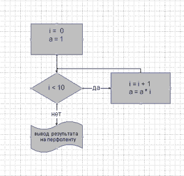 | Рис. 5. На создание этой блок-схемы потребовалось около минуты времени.
|
Отметим также, что кроме "родных" файлов Visio можно использовать достаточно широкий спектр других графических файлов. Сохранять рисунок можно не только в формате .VSD, но и в файлах других типов, в том числе HTML.
С применением готовых мастеров мы ознакомимся на примере создания схемы персонала организации. При создании нового рисунка в окне Choose Drawing Type выбираем меню Organization Chart, а затем мастер Organization Chart Wizard. Далее программа предложит два варианта: использовать данные из уже существующего файла (в форматах TXT, XLS, каталога Exchange Server или базы данных, совместимой с ODBC) или вводить информацию вручную. Выберем последний с использованием простого текстового файла, и мастер автоматически сформирует небольшой шаблон, которые откроется в редакторе NotePad.
| 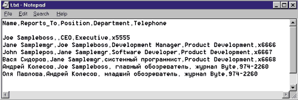 |
| Рис. 6. Описание структуры организации в виде текстового файла. Автоматически сформированный шаблон (английский текст) мы дополнили своими данными (русский текст).
|
В этом примере (рис. 6) хорошо видна логика описания структуры организации: в первой строке записаны названия полей, а далее - информация о сотрудниках. Для связывания данных используются два обязательных поля - Name (имя сотрудника) и Report_to (ссылка на имя начальника, которому подчиняется данный сотрудник). После окончания работы мастера мы получим схему организации (рис. 7), которую можно редактировать, в том числе добавляя различную информацию о сотрудниках. Понятно, что вместо отдельных людей можно описать подразделения компании и получить схему взаимодействия отделов предприятия.
| 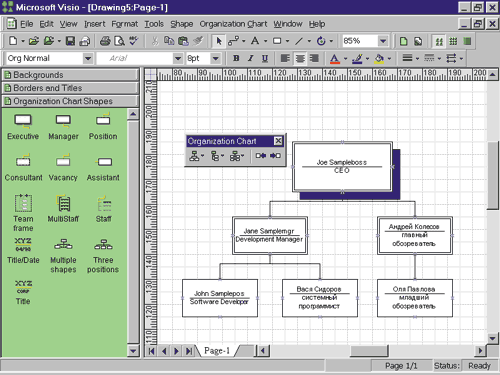 |
| Рис. 7. Вот что получается в результате работы мастера Organization Chart Wizard.
|
Конечно, это далеко не все возможности стандартного пакета Visio 2000. Отметим только, что кроме различных диаграмм и графиков он позволяет, например, работать с простейшими географическими картами.
Для ИТ-профессионалов
Для специалистов информационных отделов и разработчиков ПО особый интерес представляют функции пакета Visio 2000 Professional: построение схем компьютерных сетей, диаграмм баз данных, структурной схемы программ и карт Web-сайтов.
Для документирования компьютерных сетей предлагается шесть готовых шаблонов: Active Directory, Basic Network, LPAD Directory, Logical Network, Novell Directory и Visio Network Equipment Sampler. Нарисовав схему локальной или глобальной сети (рис. 8), пользователь с помощью мастера Property Reporting Wizard может получить полное ее описание в виде текстового файла или таблицы Excel (рис. 9). Мастер Network Diargam Wizard позволяет формировать схемы по данным, хранящимся в СУБД.
| 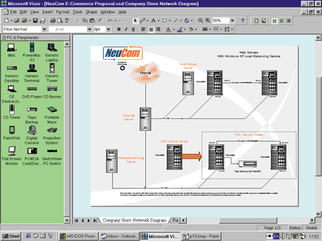 |
| Рис. 8. Схема локальной сети.
|
| 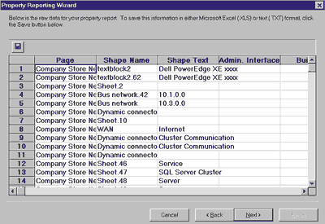 | Рис. 9. Отчет с описанием компьютерной сети получен с помощью Property Reporting Wizard.
|
При моделировании баз данных разработчик может формировать описание непосредственно в среде пакета или импортировать данные из существующих БД. В последнем случае нужно воспользоваться командой Database|Reverse Engineer.
Создание карты Web-сайта выполняется с помощью шаблона Internet Diagram|Web Site Map, который запускает мастер Generate Site Map. Далее нужно указать адрес сайта, задать параметры детальности анализа и подождать получения карты (рис. 10). Программа проанализирует корректность всех ссылок и пометит красным крестом неверные адреса. Однако следует сказать, что для сколько-нибудь сложных сайтов придется вручную оптимизировать полученное изображение, в том числе разбивая его на страницы. Для проектирования Web-узлов можно использовать шаблон Conceptual Web Site.
| 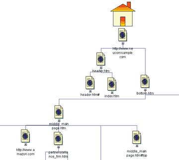 | Рис. 10. Карта Web-сайта.
|
Visio 2000 представляет большой набор средств для визуального моделирования программ - здесь можно использовать практически все распространенные типы диаграмм, описываемые с помощью Unified Modeling Language (UML) версии 1.2. При этом поддерживаются языки программирования C++, Visual Basic и Java.
После установки Visio на компьютер в средствах разработки, в частности в Visual Basic, автоматически прописываются ссылки на пакет. С помощью команды Reverse Engineer UML Model можно автоматически сформировать описание текущего приложения, которое отображается в виде иерархического дерева в окне UML Navigator (рис. 11). Надо сказать, что в данном случае мы получаем детальную информацию о программе (включая описания внутренних переменных процедуры) - то, чего не хватает VB-разработчикам все 10 лет существования этого пакета.
| 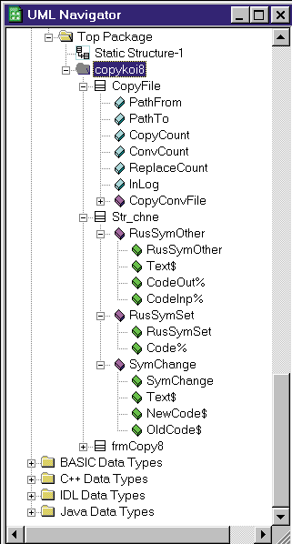 | Рис. 11. Описание VB-приложения в виде иерархического дерева в окне UML Navigator.
|
Чтобы получить представление о возможностях моделирования приложения, можно загрузить готовый пример (рис. 12). Тут нужно обратить внимание на наличие нескольких типов диаграмм, каждая из которых помещена на отдельной вкладке.
| 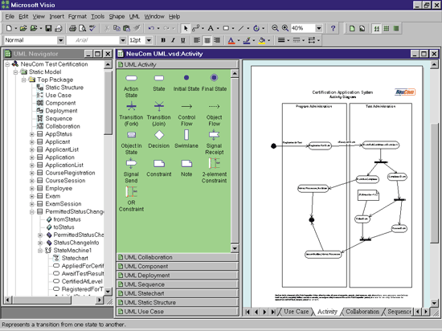 |
| Рис. 12. Одна из схем описания сложного приложения.
|
В заключение отметим, что это весьма краткий обзор функций Visio 2000, о многих из них мы вообще не упоминали. Добавим только, что редакция Enterprise существенно расширяет возможности варианта Professional за счет автоматизации формирования изображения и, самое главное, использования средств реинжиниринга структуры сетей, баз данных и приложений (создание исходных кодов, описаний сетей и т.п.).